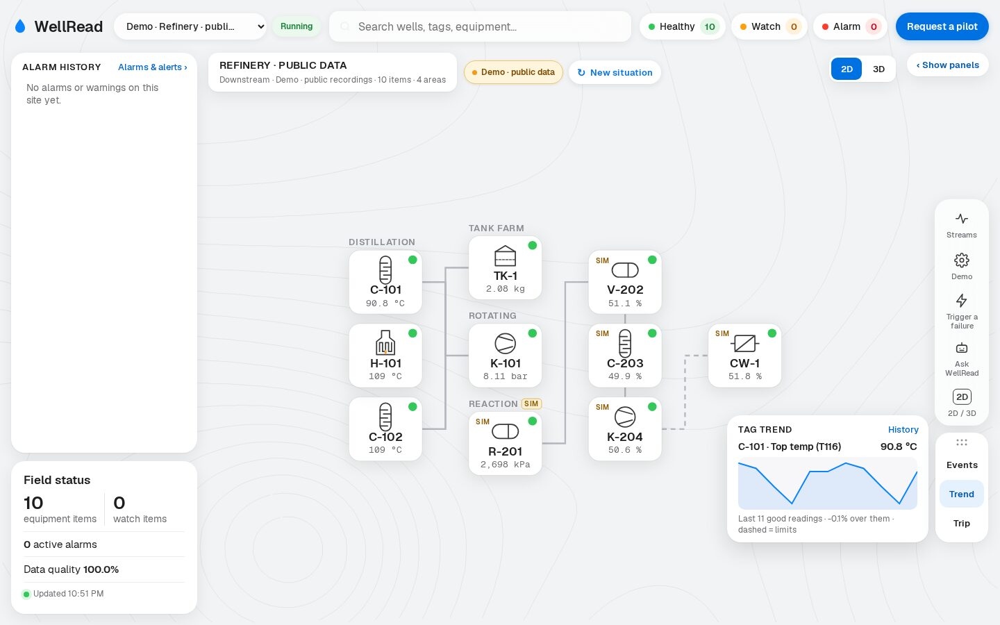
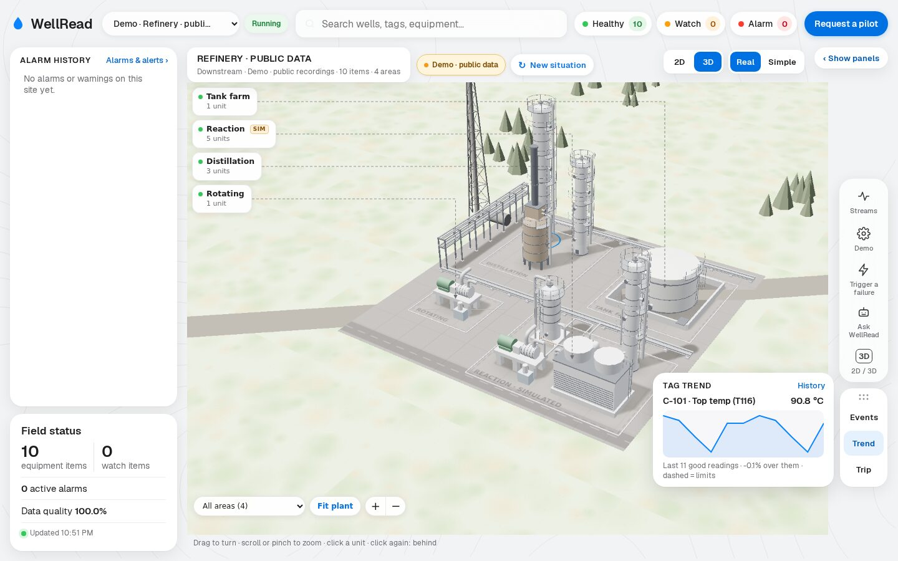
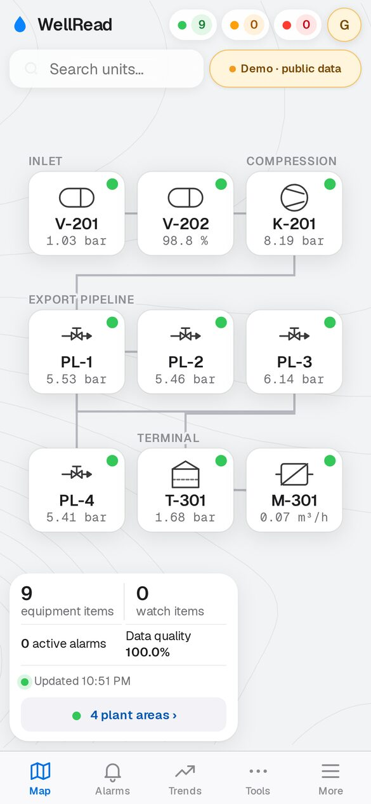

Operator
Watches the map and the Alarms & alerts screen, acknowledges and closes alerts, and asks for an operating-state change.
How it works
Five steps, all on your own server. Your safety systems stay exactly as they are.
Linux (one command, or an offline bundle for sites without internet) or Windows (a click-through installer). A setup wizard in the browser loads your pilot licence, connects your company sign-in and creates the first admin.
The Edge agent reads OPC UA, MQTT or OSIsoft / AVEVA PI Web API and passes readings to WellRead. CSV import builds a site from an export. Nothing is ever written back to the plant.
WellRead checks reading quality and learns each instrument's normal range from its own history. Before real data flows, a clearly labelled practice site with simulated data lets your team learn the screens.
Limit breaches, fast changes and steady drifts toward a trip are raised early. Alerts on the same equipment are grouped into one episode; trips are raised at once.
After each acknowledgement operators answer one quick question. Over the pilot, that feedback shows which alerts to tune, so the system gets quieter.
WellRead watches and advises. It never acts.
Watches the map and the Alarms & alerts screen, acknowledges and closes alerts, and asks for an operating-state change.
Follows sites and alarm history. Can be given rights to approve operating-state changes (a supervisor), or just view.
Installs WellRead on the company server, connects the company sign-in (Microsoft Entra, Google Workspace, OIDC, SAML, Active Directory / LDAP), and manages users, the licence and updates.
What happens to one reading, step by step.
The Edge agent, a small program on a plant PC, subscribes to OPC UA values or MQTT topics, or reads PI Web API with read-only requests. Each value keeps its quality: good, uncertain or bad.
The agent sends readings to your WellRead server over HTTPS with that site's own key. The plant never opens an inbound port. If the link is down, readings wait on disk and are sent later, oldest first, with their original timestamps. A CSV upload in the app is another way in.
Each reading is stored once per tag and timestamp, so a replay never creates duplicates.
Rules run on good readings only: limits, rate of change and trend toward a trip, plus alarm management (the quiet Watch lane, grouped episodes, chattering sensors). Bad or uncertain readings never raise, escalate or close an alert.
WellRead notices when a source goes quiet (after 60 seconds by default) or a value stays frozen too long. Those values are greyed with "No data" or "Frozen" and a "Data stopped" notice names the source. It is a warning to people only; nothing is sent to the plant.
The app fetches fresh readings and alerts about every 60 seconds and draws the 2D map, the optional 3D view, trends and the Alarms & alerts screen, on phone and desktop.
Operators acknowledge and close alerts and request operating-state changes; an admin or a supervisor approves, and nobody approves their own request. Every change goes to the audit trail.
Screenshots of the live app's guest demo: a simulated plant replaying real public recordings.



The same app runs inside your network. WellRead's public site only hosts the demo and pilot requests; your plant data never goes there.
Read the Pilot Agreement, tick "I agree" and pick 30, 60 or 90 days on the Request a pilot page.
You get a random pilot code (WR-XXXX-XXXX-XXXX). That code is all that is kept about you; a code still waiting after 14 days is deleted.
When the pilot is approved you receive a signed licence: a small text file holding only the pilot code and the end date. Your server checks it offline; nothing is sent home.
After the end date there are 14 days of grace in which everything keeps working and admins see a renewal banner.
The words you will meet in WellRead, one line each.
Questions about pilots, support or security? Write to Darwinszoe@gmail.com.
Installed on your own server with a signed licence, connected read-only to the data you already have.